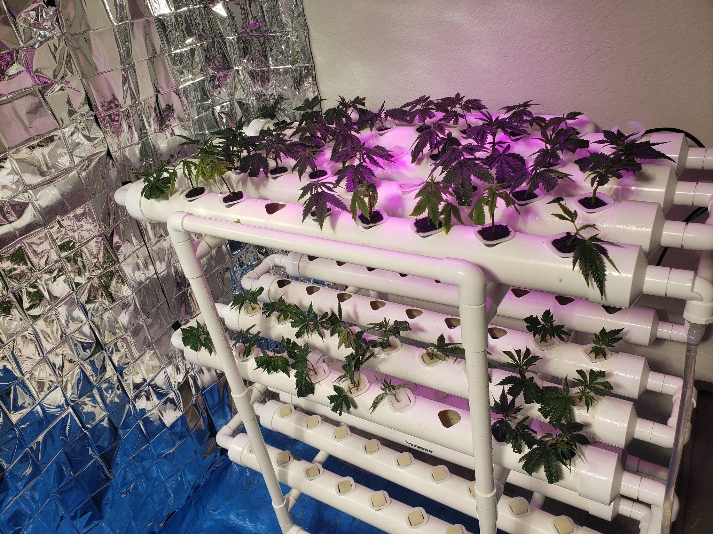
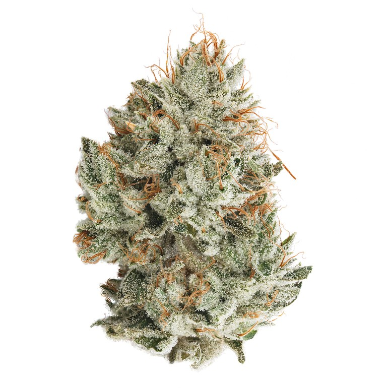
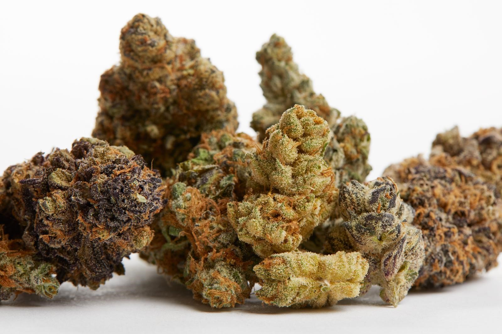
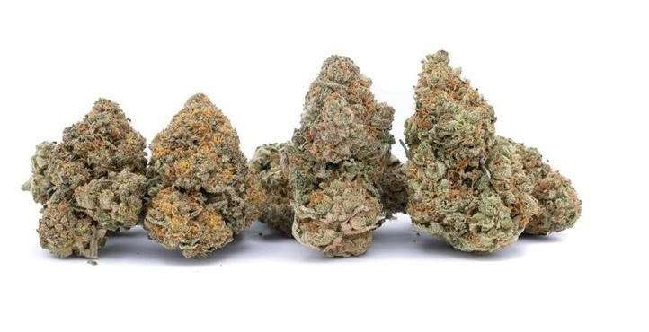

My Cannabis strains website
A typical clone is about 6 inches in length, give or take, and after cutting it off the mother plant, the clone is put into a medium such as a root cube and given a hormone to encourage root growth. After roots develop, it is then transplanted into a pot or the ground, and it will grow like any weed plant.
Master Kush, also known as "High Rise," "Grandmaster Kush," and "Purple SoCal Master Kush" is a popular indica marijuana strain crossed from two landrace strains from different parts of the Hindu Kush region by the Dutch White Label Seed Company in Amsterdam. The plant produces a subtle earthy, citrus smell with a hint of incense, which is often described as a vintage flavor. The taste of Master Kush is reminiscent of the famous hard-rubbed charas hash. This strain holds a superb balance of full-body relaxation without mind-numbing effects. Instead, Master Kush offers a sharpened sensory awareness that can bring out the best of any activity.
Oreoz, also known as "Oreo Cookies' ' and "Oreos," is a potent hybrid marijuana strain made by crossing Cookies and Cream with Secret Weapon. This strain produces a long-lasting and relaxing high. Consumers should take caution as the high potency of Oreoz may be overwhelming to those new to cannabis. This strain has an aroma reminiscent of campfire s'mores, with extra delicious hints of chocolate and diesel. Medical marijuana patients use Oreoz to help relieve symptoms associated with appetite loss, insomnia, chronic stress and depression. Growers say this strain has dense buds that are lumpy, long, and neon green in color with amber hairs and glittering trichomes.
Ice Cream Cake is an indica marijuana strain made by crossing Wedding Cake with Gelato #33. This strain offers sedating effects that leave your mind and body completely relaxed. Ice Cream Cake features a creamy flavor profile with sweet hints of vanilla and sugary dough. This strain is reported by medical marijuana patients and consumers to have calming effects that help with pain, sleep, and anxiety. Ice Cream Cake is ideal for night time use when you have nothing important to do except watch TV and fall asleep. Growers say this strain has light green and purple buds that are completely flushed with icy trichomes.